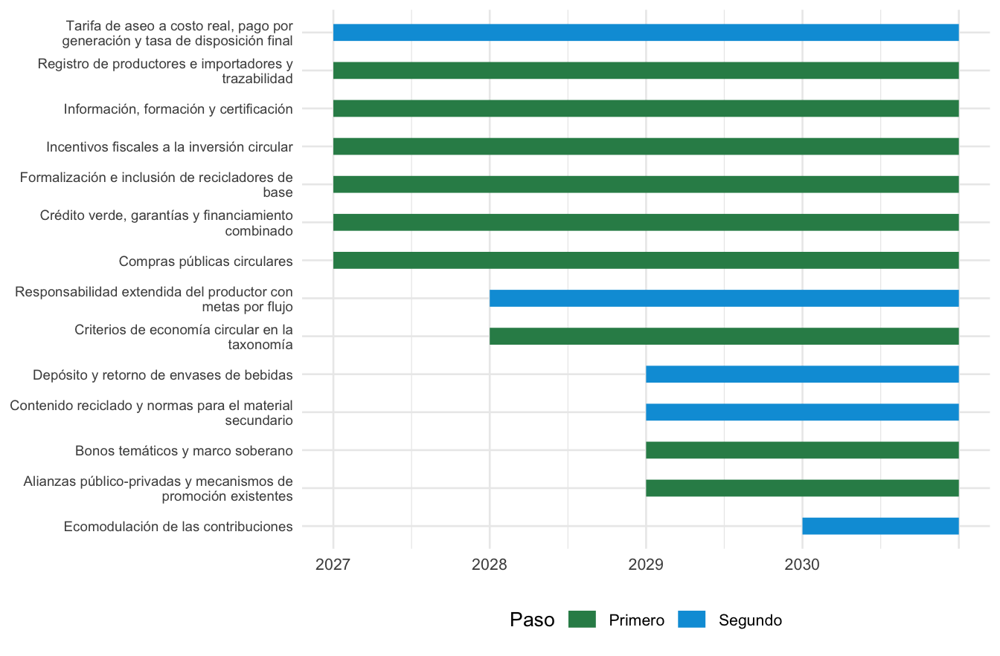

Sigla | Significado |
|---|---|
AAUD | Autoridad de Aseo Urbano y Domiciliario |
ACODECO | Autoridad de Protección al Consumidor y Defensa de la Competencia |
AMPYME | Autoridad de la Micro, Pequeña y Mediana Empresa |
APP | Asociación público-privada |
ATP | Autoridad de Turismo de Panamá |
BID | Banco Interamericano de Desarrollo |
CEPAL | Comisión Económica para América Latina y el Caribe |
DGCP | Dirección General de Contrataciones Públicas |
DGNTI | Dirección General de Normas y Tecnología Industrial |
MEF | Ministerio de Economía y Finanzas |
MiAMBIENTE | Ministerio de Ambiente |
MICI | Ministerio de Comercio e Industrias |
MINSA | Ministerio de Salud |
OCDE | Organización para la Cooperación y el Desarrollo Económicos |
REP | Responsabilidad extendida del productor |
SBP | Superintendencia de Bancos de Panamá |
SINIA | Sistema Nacional de Información Ambiental |
SMV | Superintendencia del Mercado de Valores |
SSRP | Superintendencia de Seguros y Reaseguros de Panamá |
Hoja de Ruta Nacional para el Financiamiento de la Economía Circular en Panamá
Diseño de instrumentos, actores y roles, fuentes de financiamiento, reformas e indicadores
Resumen ejecutivo
La transición hacia una economía circular, en la que los materiales se mantienen en uso en lugar de terminar en un relleno sanitario, necesita dinero. Hace falta pagar la recolección separada de los residuos, su clasificación y su reciclaje, invertir en plantas y equipos y dar acceso al crédito a los recicladores y a las pequeñas empresas que quieren participar. Esta Hoja de Ruta propone cómo movilizar esos recursos en Panamá entre 2027 y 2030 por medio de catorce instrumentos económicos y financieros. Para cada uno define parámetros de diseño, una meta, la institución responsable, la norma legal necesaria, un año de inicio y una fuente de recursos.
La propuesta parte de dos estudios previos. El primero caracterizó con estadísticas oficiales los siete sectores de la economía donde la circularidad es más relevante, que son los seis que prioriza la Hoja de Ruta de Economía Circular del Ministerio de Ambiente y el turismo, y propuso los catorce instrumentos (Vargas, 2026a). El segundo evaluó su factibilidad y concluyó que casi todas las facultades legales que requieren ya existen en leyes vigentes, aunque faltan los reglamentos que las pongan en operación (Vargas, 2026b).
La Hoja de Ruta descansa en tres decisiones de diseño. La primera es usar las instituciones y las leyes que ya existen antes que crear nuevas. La Ley 276 de 2021 ya hace de la Autoridad de Aseo Urbano y Domiciliario (AAUD) la institución que propone las normas de responsabilidad extendida del productor (REP), el mecanismo que obliga a quien vende un producto a financiar su gestión cuando se convierte en residuo, y que autoriza los sistemas de depósito y retorno de envases (Asamblea Nacional de Panamá, 2021b, art. 74). La Ley 502 de 2025 encarga al Ministerio de Ambiente la plataforma de indicadores y la reglamentación de la ley (Asamblea Nacional de Panamá, 2025, arts. 11 y 13), y la Dirección General de Contrataciones Públicas ya tiene el mandato de incluir criterios de economía circular en las compras del Estado (Asamblea Nacional de Panamá, 2025, art. 12). La segunda decisión es empezar por lo que habilita todo lo demás, que es un registro de productores e importadores alimentado por las declaraciones de aduana. La tercera es que los instrumentos se financien sobre todo con aportes de quienes ponen productos en el mercado y de quienes usan el servicio de aseo, con apoyo de la banca multilateral para el crédito y las garantías.
Los instrumentos se ordenan en dos pasos. El primer paso, en 2027, crea las condiciones. Incluye el reglamento de la Ley 502 con el registro y la plataforma de indicadores, el registro de los recicladores de base como gestores de residuos, el reglamento de los incentivos fiscales que ya otorgan las leyes, criterios circulares en las compras públicas, una ventana para proyectos circulares en el Fondo de Garantías de Panamá, la tarifa de aseo a costo real escalonada según el nivel socioeconómico, y programas de formación y certificación que incluyen el turismo sostenible. El segundo paso, entre 2028 y 2030, introduce las metas y los cargos. Incluye la REP de envases, con metas de valorización que empiezan en 10 % y llegan a 45 % al décimo año, el depósito y retorno de envases de bebidas, normas de contenido reciclado, una segunda edición de la taxonomía de finanzas sostenibles con criterios circulares, una primera emisión de bonos soberanos para proyectos de residuos y agua, la asociación público-privada de residuos de Panamá y San Miguelito y, al final, la ecomodulación de las contribuciones de la REP.
Los montos de referencia muestran que los instrumentos movilizarían recursos considerables con un costo pequeño para los hogares. La REP de envases movilizaría entre 42 y 55 millones de dólares en su primer año de operación, aportados por productores e importadores, y entre 187 y 246 millones al décimo año. La tarifa de aseo a costo real cerraría una brecha anual de B/.25,4 millones entre lo que la AAUD recauda y lo que gasta (La Estrella de Panamá, 2026). Una tasa de B/.10 por tonelada de residuos de construcción recaudaría hasta B/.10,7 millones al año. Aun si todo el cargo se trasladara a los precios, el costo de la canasta de consumo de los hogares subiría 0,21 % por cada punto porcentual de contribución de REP y 0,13 % por el cierre de la brecha del aseo (Vargas, 2026b).
Para lograrlo hacen falta una ley de REP con metas, sistemas colectivos de productores, sanciones y un depósito obligatorio; cuatro decretos que reglamenten las leyes 502, 276 y 223; resoluciones de la AAUD, de la Dirección General de Contrataciones Públicas y del Ministerio de Comercio e Industrias; acuerdos de las superintendencias para la taxonomía y acuerdos municipales para las tasas. El avance se medirá con catorce indicadores alineados con la plataforma que ordena la Ley 502, y el Ministerio de Ambiente los reportará cada tres años.
Lista de cuadros y figuras
Cuadros
- Cuadro 2: Diseño de los instrumentos
- Cuadro 3: Trayectoria de la REP de envases
- Cuadro 4: Actores y roles por instrumento
- Cuadro 5: Fuentes de financiamiento
- Cuadro 6: Reformas normativas por nivel jurídico
- Cuadro 7: Articulación con la Ley 502 y otros instrumentos nacionales
- Cuadro 8: Indicadores de seguimiento
- Cuadro 1: Glosario de siglas
Figuras
- Figura 1: Cronograma de entrada en vigor de los instrumentos
Glosario de siglas
El Cuadro 1 reúne las siglas usadas en el documento.
1 Introducción
Panamá decidió el rumbo de su transición hacia la economía circular con la Ley 502 de 2025, que declara la REP como uno de sus mecanismos y ordena un Plan Estratégico Nacional de Economía Circular (Asamblea Nacional de Panamá, 2025, arts. 2 y 10). Una ley marco como esa fija objetivos, pero no dice cuánto costará alcanzarlos, quién pagará ni por medio de qué instituciones. Esta Hoja de Ruta responde esas preguntas. Propone un conjunto de instrumentos económicos y financieros, los diseña para la realidad institucional, legal y financiera del país, y los ordena en el tiempo.
La Hoja de Ruta es el tercer documento de una secuencia. El primero relacionó las actividades económicas de las cuentas nacionales con siete sectores de política, caracterizó cada uno con indicadores de producción, empleo, comercio, emisiones y residuos, y propuso catorce instrumentos (Vargas, 2026a). El segundo evaluó la factibilidad política y técnica de esos instrumentos, estimó su efecto sobre los precios, revisó las capacidades de las instituciones públicas y analizó el sistema financiero (Vargas, 2026b). Este documento toma los resultados de ambos y los convierte en un plan de acción.
El documento se organiza en siete partes. Después de los objetivos y de un resumen de los antecedentes, presenta el diseño de cada instrumento con sus montos de referencia, los actores y sus roles, las fuentes de financiamiento, las reformas normativas necesarias, la articulación con la Ley 502 y con otras políticas nacionales, y los indicadores de seguimiento.
El documento forma parte de la cooperación técnica que la CEPAL presta al Ministerio de Ambiente, financiada por el programa CEPAL-BMZ/GIZ “Promoviendo la Economía Circular”. Sus cálculos se documentan en memorias de cálculo públicas.1
2 Objetivos
2.1 Objetivo general
Definir y diseñar los instrumentos económicos y financieros, aplicables a la realidad de Panamá, que pueden potenciar las iniciativas de economía circular, con sus responsables, fuentes de financiamiento, reformas normativas e indicadores de seguimiento.
2.2 Objetivos específicos
- Diseñar cada instrumento, incluida la REP, con parámetros, metas, montos de referencia y año de entrada en vigor.
- Asignar los roles de los actores públicos y privados en la implementación, el monitoreo y la evaluación de los instrumentos.
- Identificar las fuentes de financiamiento nacionales e internacionales, públicas y privadas.
- Identificar las reformas normativas e institucionales necesarias según su nivel jurídico.
- Proponer indicadores para dar seguimiento al desempeño y al impacto de los instrumentos.
- Articular la propuesta con la Ley 502 y con los demás instrumentos nacionales de política.
3 Antecedentes
3.1 Lo que muestran los datos de la economía
El estudio sectorial documentó seis rasgos de la economía panameña que orientan el diseño de los instrumentos (Vargas, 2026a). El primero es el volumen de residuos, pues el país genera 1,97 millones de toneladas de residuos municipales al año (Banco Mundial, 2024), y los materiales de envase (plástico, papel y cartón, vidrio y metal) suman hasta 38 % de ese peso. El segundo es que los sectores que pondrían productos en el mercado importan más de lo que exportan, de modo que quienes paguen la REP serán en buena parte importadores, y el instrumento tiene que apoyarse en la aduana. El tercero es la informalidad, que supera 60 % del empleo en los sectores con más trabajadores, lo que obliga a acompañar los cargos con crédito y apoyo técnico. El cuarto es el peso de la construcción, que es el mayor sector de política por valor agregado y genera más de un millón de toneladas de residuos de obra al año. El quinto es que la energía y el agua, aunque pequeñas en las cuentas nacionales, atraen inversión y ya tienen marcos de financiamiento. El sexto es el turismo, que es el principal exportador entre los sectores de política, emplea a más mujeres que hombres y está formado en su mayoría por microempresas.
3.2 Lo que muestra la evaluación de factibilidad
La evaluación de factibilidad calificó cada instrumento con siete criterios, que incluyen su impacto, su factibilidad técnica, institucional, política y financiera, el tiempo que toma aplicarlo y su efecto sobre la equidad (Vargas, 2026b). Sus resultados principales son cuatro. El marco legal vigente permite iniciar doce de los catorce instrumentos con decretos, resoluciones o acuerdos, sin una ley nueva. La REP y el depósito pueden empezar con resoluciones de la AAUD, porque la Ley 276 de 2021 le dio esa facultad (Asamblea Nacional de Panamá, 2021b, art. 74), aunque las metas con sanciones propias y un depósito obligatorio tendrían una base más sólida en una ley específica, como recomienda la Hoja de Ruta de plásticos que el Ministerio de Ambiente adoptó en 2026 (Ministerio de Ambiente de Panamá, 2026). La AAUD es la institución con las funciones legales más completas para los instrumentos de residuos, pero recauda poco más de la mitad de lo que gasta (La Estrella de Panamá, 2026). Por último, el sistema financiero tiene una arquitectura de finanzas sostenibles, pero su taxonomía todavía no tiene criterios para reconocer una inversión como circular (Superintendencia de Bancos de Panamá, 2025b).
4 Diseño de los instrumentos
4.1 Principios de diseño
El diseño de los catorce instrumentos sigue cuatro principios, cada uno derivado de la evidencia de los estudios previos y de la experiencia de otros países. El primero es la gradualidad. Las metas empiezan bajas y suben a medida que los sistemas ganan capacidad, como ocurrió en Chile y en Colombia con sus sistemas de REP de envases (Ministerio de Ambiente y Desarrollo Sostenible de Colombia, 2018; Ministerio del Medio Ambiente de Chile, 2020b), y la propia Ley 276 consagra la gradualidad como principio (Asamblea Nacional de Panamá, 2021b, art. 7.2). El segundo es la secuencia, que significa que ningún cargo entra en vigor antes de que el registro y el control funcionen, porque la experiencia europea muestra que los impuestos y las obligaciones pierden eficacia cuando nadie los fiscaliza (Agencia Europea de Medio Ambiente, 2023). El tercero es la inclusión. Los recicladores de base reciben un pago por cada tonelada recuperada, financiado con la REP y la tasa de aseo, y la tarifa se escalona según el nivel socioeconómico de los hogares, como ordena la ley (Asamblea Nacional de Panamá, 2021b, arts. 7.1 y 66). El cuarto es aprovechar las instituciones que ya existen antes de crear otras nuevas.
4.2 Los catorce instrumentos
El Cuadro 2 resume el diseño de cada instrumento, ordenado por el año en que entraría en vigor, con sus parámetros principales, su meta y su monto de referencia. Los montos se calcularon con las bases de datos de las memorias de cálculo, y las secciones que siguen explican los más importantes.
Instrumento | Inicio | Parámetros | Meta | Monto de referencia |
|---|---|---|---|---|
Registro de productores e importadores y trazabilidad | 2027 | Registro en la plataforma de la Ley 502, alimentado por las declaraciones aduaneras por partida; flujos iniciales: envases, aparatos eléctricos y electrónicos, neumáticos, aceites y baterías | Productores e importadores de los flujos iniciales inscritos | Costo administrativo |
Formalización e inclusión de recicladores de base | 2027 | Registro de recicladores como gestores con requisitos graduales (Ley 276, art. 50-51); pago por tonelada desde la REP y la tasa; certificación de competencias | Recicladores registrados y con pago por tonelada en los municipios con mayor generación | Pago por tonelada desde las contribuciones de la REP |
Tarifa de aseo a costo real, pago por generación y tasa de disposición final | 2027 | Tasa de gestión integral a costo real escalonada por nivel socioeconómico; pilotos de pago por generación en comercios, hoteles y restaurantes; tasa de disposición de B/.10 por tonelada de residuos de obra | Recaudación igual al costo del servicio | Cierra una brecha de B/.25,4 millones al año; la tasa de obra recauda hasta B/.10,7 millones |
Incentivos fiscales a la inversión circular | 2027 | Reglamento del MEF para los incentivos de la Ley 223 de 2021 y del art. 52 de la Ley 276, con lista de equipos elegibles y evaluación a los cinco años | Plantas de reciclaje y equipos acogidos | Gasto tributario acotado por la lista de bienes elegibles |
Compras públicas circulares | 2027 | Fichas técnicas con criterios de economía circular en PanamaCompra para obra, papel, mobiliario y equipos; preferencia por material reciclado nacional | Criterios circulares en los pliegos de obra pública | Neutral con costo del ciclo de vida |
Crédito verde, garantías y financiamiento combinado | 2027 | Ventana circular en el Fondo de Garantías de Panamá para recicladores, gestores y pymes, incluidas las turísticas, con cobertura adicional | Crédito garantizado a negocios circulares | Ventana dentro del fondo existente de US$150 millones |
Información, formación y certificación | 2027 | Formación de analistas de crédito y compradores públicos; certificación de recicladores; certificación de sostenibilidad turística; reporte trienal de indicadores | Primer reporte de indicadores de economía circular publicado | Presupuesto y cooperación técnica |
Responsabilidad extendida del productor con metas por flujo | 2028 | Sistemas colectivos autorizados por la AAUD; metas de valorización de 10 % (año 1), 25 % (año 5) y 45 % (año 10); auditoría independiente | 45 % de valorización de envases al décimo año | Costo de cumplimiento de US$42 a 55 millones en el primer año |
Criterios de economía circular en la taxonomía | 2028 | Segunda edición de la taxonomía con criterios de contribución sustancial a la economía circular en residuos, reciclaje, construcción y manufactura | Cartera bancaria alineada al objetivo circular reportada | Costo bajo |
Depósito y retorno de envases de bebidas | 2029 | Sistema de depósito para PET, aluminio y vidrio de bebidas, operado por los productores y autorizado por la AAUD; puntos de retorno en comercios, hoteles y restaurantes | 90 % de recolección separada de botellas, en línea con el estándar europeo para 2029 | Autofinanciado con depósitos no reclamados y venta de material |
Contenido reciclado y normas para el material secundario | 2029 | Norma DGNTI de áridos reciclados y de PET reciclado de grado alimentario; contenido mínimo gradual en botellas | Contenido reciclado de 25 % en botellas PET y uso de áridos reciclados en la obra pública | Sin costo fiscal |
Bonos temáticos y marco soberano | 2029 | Primera emisión soberana temática con proyectos de valorización de residuos y tratamiento de agua de la categoría circular del Marco de Financiamiento Sostenible | Una emisión con informe de asignación publicado | Según la cartera de proyectos preparada |
Alianzas público-privadas y mecanismos de promoción existentes | 2029 | Estructuración de la APP de residuos de Panamá y San Miguelito con pagos por desempeño y cláusulas de inclusión de recicladores | Capacidad de valorización contratada | Capital privado pagado con la tasa de gestión |
Ecomodulación de las contribuciones | 2030 | Tarifa con recargos y bonificaciones según reciclabilidad, monomaterial y contenido reciclado nacional | Diferencia de tarifa suficiente entre envases reciclables y no reciclables | Neutral en recaudación |
Fuente: elaboración propia con base en las memorias de cálculo 10 a 14.
La Figura 1 muestra cómo se ordenan los instrumentos en el tiempo. Los del primer paso se concentran en 2027 porque solo requieren reglamentos y resoluciones. Los del segundo paso se escalonan entre 2028 y 2030 según el tiempo que toma preparar cada uno, y la ecomodulación queda al final porque requiere que los sistemas de REP ya estén operando.

Fuente: elaboración propia.
4.3 Responsabilidad extendida del productor de envases
La REP de envases es el instrumento de mayor impacto y el que más recursos moviliza, por lo que su diseño merece una explicación detallada. La idea es sencilla: quien pone en el mercado un producto envasado debe pagar por la recolección y el reciclaje de ese envase cuando se convierte en residuo, en lugar de que lo paguen los municipios con recursos de todos los contribuyentes. En la práctica, los productores e importadores de bienes envasados se inscriben en el registro y se agrupan en sistemas colectivos, que son organizaciones sin fines de lucro autorizadas por la AAUD que contratan la recolección, la clasificación y el reciclaje de los envases de todos sus miembros. Cada sistema debe cumplir metas anuales de valorización, es decir, de la proporción de envases que se recupera y vuelve a la producción, y se somete a una auditoría independiente. Los recicladores de base registrados pueden vender su material a los sistemas, como en Chile, donde al menos la mitad de las instalaciones de recepción deben incorporarlos (Ministerio del Medio Ambiente de Chile, 2020b, art. 41). Cada productor paga según las toneladas de envases que pone en el mercado y, a partir de 2030, el pago se ajusta según qué tan reciclables son sus envases.
Para estimar cuánto costaría el sistema se partió de la experiencia de Chile, el país de la región con un sistema de REP de envases en operación. Su primer sistema colectivo de envases domiciliarios estimó un costo de entre 380.000 y 500.000 pesos chilenos por cada tonelada valorizada (ReSimple y Ministerio del Medio Ambiente de Chile, 2024), que equivalen a entre 549 y 722 dólares con el tipo de cambio de 692 pesos por dólar del estudio de impacto chileno (Ministerio del Medio Ambiente de Chile, 2020a). Ese costo por tonelada se multiplicó por las toneladas que habría que valorizar en Panamá para cumplir una trayectoria de metas similar a la chilena. Como muestra el Cuadro 3, con una meta de 10 % en el primer año el sistema valorizaría unas 76 mil toneladas, con un costo de entre 42 y 55 millones de dólares, que crecería a medida que suben las metas. Estas cifras son un techo por dos razones: la base de toneladas incluye materiales que no son envases, y el peso chileno se ha depreciado desde que se hizo el estudio. La Organización para la Cooperación y el Desarrollo Económicos (OCDE) estima que la administración de estos sistemas representa entre 5 % y 10 % del costo total, y que la mayor parte se va en la recolección y la clasificación (Organización para la Cooperación y el Desarrollo Económicos, 2016).
Año | Meta de valorización (%) | Toneladas valorizadas | Costo mínimo (millones de US$) | Costo máximo (millones de US$) |
|---|---|---|---|---|
2028 | 10 | 75.683 | 41,6 | 54,7 |
2032 | 25 | 189.207 | 103,9 | 136,7 |
2037 | 45 | 340.573 | 187,0 | 246,1 |
Fuente: elaboración propia con datos de residuos del Banco Mundial (Banco Mundial, 2024) y costos del sistema colectivo de envases de Chile (Ministerio del Medio Ambiente de Chile, 2020a; ReSimple y Ministerio del Medio Ambiente de Chile, 2024).
4.4 Depósito y retorno de envases de bebidas
En un sistema de depósito y retorno, el consumidor paga un pequeño monto adicional al comprar una bebida envasada y lo recupera al devolver el envase vacío. El depósito es un incentivo para devolver el envase, y lo que se recauda por los envases que no se devuelven ayuda a financiar el sistema. El sistema propuesto cubre las botellas de PET, las latas de aluminio y el vidrio de bebidas, y lo operan los productores dentro de la REP de envases, con autorización de la AAUD (Asamblea Nacional de Panamá, 2021b, art. 74). La red de retorno incluye comercios, hoteles y restaurantes, y la meta es acercarse al estándar europeo de 90 % de recolección separada de botellas para 2029 (Parlamento Europeo y Consejo de la Unión Europea, 2025). El control de los envases que entran por las fronteras es indispensable, porque en Ecuador se devolvieron más botellas de las que se vendieron cuando empezaron a entrar envases de países vecinos para cobrar el depósito (Servicio de Rentas Internas del Ecuador, 2014). Su efecto sobre el costo de vida es mínimo, pues un costo de operación igual a 1 % del valor de la producción de bebidas eleva la canasta de los hogares en 0,013 % (Vargas, 2026b).
4.5 Tarifa de gestión de residuos a costo real
Hoy el servicio de aseo recauda menos de lo que cuesta, y la diferencia la cubre el presupuesto público o se convierte en deuda y en un servicio deficiente. La Ley 276 ordena corregirlo, pues establece que la tasa de gestión integral de residuos debe incorporar el costo de todas las fases del servicio y considerar el nivel socioeconómico de cada comunidad (Asamblea Nacional de Panamá, 2021b, arts. 66 y 75). El diseño propuesto tiene tres componentes. El primero es una tasa residencial escalonada por nivel socioeconómico, que cierra la brecha de B/.25,4 millones entre lo que la AAUD recauda y lo que gasta y protege a los hogares de menores ingresos. El segundo son pilotos de pago por generación, en los que comercios, hoteles y restaurantes pagan según la cantidad de residuos mezclados que producen, lo que premia a quienes separan sus residuos reciclables. El tercero es una tasa de disposición de B/.10 por tonelada de residuos de construcción, similar al costo de operación del relleno sanitario de Cerro Patacón (TVN, 2023), que se aplicaría cuando existan sitios autorizados para recibir y valorizar esos residuos. El pliego de tarifas debe pasar por la consulta ciudadana que exige la Ley 6 de 2002 (Asamblea Legislativa de Panamá, 2002), y el cobro puede hacerse en la factura eléctrica, como ya ocurre en San Miguelito (Consejo de Gabinete de Panamá, 2026).
En los destinos turísticos, la Hoja de Ruta propone que los municipios con mayor afluencia de visitantes complementen la tasa con un cargo por visitante destinado a la gestión de residuos. Hay un precedente en el país, pues Taboga cobra desde 2025 un dólar por visitante para la limpieza de la isla (La Estrella de Panamá, 2025), y uno internacional en el impuesto de estancias turísticas de las Islas Baleares, cuyo fondo da prioridad a los proyectos de agua y residuos (Comunidad Autónoma de las Illes Balears, 2016).
4.6 Incentivos fiscales
Los incentivos fiscales que propone la Hoja de Ruta ya están en la ley, y lo que falta es hacerlos operativos. La Ley 223 de 2021 exonera por cinco años del impuesto sobre la renta, del impuesto de dividendos y de los aranceles de los equipos a las plantas de reciclaje que avala el Ministerio de Ambiente (Asamblea Nacional de Panamá, 2021a). La Ley 276 reduce la tasa del impuesto sobre la renta a 15 % para el aprovechamiento de residuos y exime del impuesto de transferencia de bienes y servicios la compraventa de residuos valorizados y la importación de maquinaria de aprovechamiento (Asamblea Nacional de Panamá, 2021b, art. 52). El Ministerio de Economía y Finanzas debe reglamentar estos beneficios, con una lista certificada de equipos que pueden recibirlos y una evaluación a los cinco años para comprobar que cumplen su propósito. La Hoja de Ruta no propone incentivos nuevos, porque el espacio fiscal es estrecho: los ingresos tributarios del Gobierno Central equivalen a cerca de 7 % del producto interno bruto (Instituto Nacional de Estadística y Censo (INEC), 2026) y la regla fiscal reduce el déficit permitido hasta 1,5 % del producto en 2030 (García Armuelles, 2026).
4.7 Instrumentos financieros
Los instrumentos financieros buscan que el capital llegue a proyectos que hoy no lo consiguen, y la Hoja de Ruta propone cuatro que aprovechan mecanismos existentes. El primero es una ventana de economía circular en el Fondo de Garantías de Panamá, que ya cuenta con recursos del Banco Interamericano de Desarrollo (BID) y que la Superintendencia de Bancos reconoce como mitigante del riesgo de crédito (Superintendencia de Bancos de Panamá, 2025a). Una garantía parcial cubre una parte de la pérdida si el deudor no paga, lo que permite a los bancos prestar a recicladores, gestores de residuos y pequeñas empresas con proyectos circulares, incluidas las turísticas, que de otra forma considerarían demasiado riesgosos. El segundo es una segunda edición de la taxonomía de finanzas sostenibles con criterios para reconocer cuándo una actividad contribuye a la economía circular (Superintendencia de Bancos de Panamá et al., 2024). El tercero es una primera emisión de bonos soberanos temáticos con proyectos de valorización de residuos y tratamiento de agua, bajo la categoría de economía circular que ya contiene el Marco de Financiamiento Sostenible de la República (Ministerio de Economía y Finanzas de Panamá, 2024). El cuarto es apoyar a las empresas de reciclaje para que emitan bonos en la bolsa local, siguiendo el ejemplo de la primera empresa de este tipo que lo hizo en 2026 (BG Metal Trade, Inc., 2026).
5 Actores y roles
Los instrumentos funcionan solo si cada actor sabe qué le corresponde hacer. La implementación descansa en seis instituciones públicas, con roles que ya les asignan sus leyes. La AAUD es la autoridad de la REP, del depósito y de la tasa de aseo. El Ministerio de Ambiente reglamenta la Ley 502, opera la plataforma de indicadores y coordina el Consejo Nacional de Economía Circular. El Ministerio de Economía y Finanzas reglamenta los incentivos fiscales, emite la deuda temática y administra, junto con el Banco Nacional, el fondo de garantías. La aduana, el Ministerio de Comercio e Industrias y la Autoridad de Protección al Consumidor y Defensa de la Competencia controlan las importaciones y el comercio. La Dirección General de Contrataciones Públicas aplica los criterios de compra. Las superintendencias gobiernan la taxonomía. Del lado privado, los productores e importadores organizan los sistemas colectivos, y la banca, la bolsa y la banca multilateral proveen el financiamiento. Los municipios regulan la separación de residuos y fijan tasas donde prestan el servicio. El Cuadro 4 presenta el responsable y la fuente de recursos de cada instrumento.
Instrumento | Responsable y actores | Fuente de recursos |
|---|---|---|
Registro de productores e importadores y trazabilidad | MiAMBIENTE y AAUD, con datos de Aduanas y del MICI | Presupuesto de las instituciones; costo bajo |
Formalización e inclusión de recicladores de base | AAUD y municipios; MITRADEL e INADEH para la certificación | Contribuciones de la REP y tasa de gestión de residuos |
Responsabilidad extendida del productor con metas por flujo | AAUD (autoriza y fiscaliza sistemas de gestión) y MiAMBIENTE | Contribuciones de los productores por tonelada puesta en el mercado |
Ecomodulación de las contribuciones | Sistemas de gestión autorizados por la AAUD | Las mismas contribuciones de la REP |
Depósito y retorno de envases de bebidas | Administrador del sistema (productores), autorizado por la AAUD; Aduanas y ACODECO en el control | Depósitos no reclamados y venta de material |
Contenido reciclado y normas para el material secundario | MICI (DGNTI) y MiAMBIENTE | Sin costo fiscal; lo paga el productor |
Tarifa de aseo a costo real, pago por generación y tasa de disposición final | AAUD y municipios; distribuidoras eléctricas para el cobro | Usuarios del servicio |
Incentivos fiscales a la inversión circular | MEF (DGI) con aval técnico de MiAMBIENTE y AAUD | Gasto tributario |
Compras públicas circulares | Dirección General de Contrataciones Públicas | Presupuesto de las entidades compradoras |
Criterios de economía circular en la taxonomía | SBP, SMV y SSRP con el Grupo de Trabajo de Finanzas Sostenibles; MiAMBIENTE y MEF | Presupuesto de las superintendencias; cooperación técnica |
Bonos temáticos y marco soberano | MEF (Crédito Público); emisores privados y SMV | Mercado de capitales |
Crédito verde, garantías y financiamiento combinado | Banco Nacional de Panamá, AMPYME y MEF, con el BID y BID Invest | Recursos multilaterales y concesionales |
Alianzas público-privadas y mecanismos de promoción existentes | Secretaría Nacional de APP, AAUD y municipios | Tasa de gestión de residuos, pagos del Estado y capital privado |
Información, formación y certificación | MiAMBIENTE, MICI, MEDUCA, INADEH y AAUD; ATP en turismo | Presupuesto y cooperación técnica |
Fuente: elaboración propia con base en las funciones legales de cada institución.
El monitoreo y la evaluación requieren además una instancia de coordinación. La Hoja de Ruta propone que el Consejo Nacional de Economía Circular incorpore al Ministerio de Economía y Finanzas y a la aduana, que hoy no lo integran pese a ser piezas centrales de la recaudación y el control (Asamblea Nacional de Panamá, 2025, art. 9), y que el Ministerio de Ambiente publique el reporte de indicadores que la ley le ordena presentar cada tres años (Asamblea Nacional de Panamá, 2025, art. 11). La Contraloría General de la República fiscaliza el uso de los fondos públicos y refrenda los contratos de gestión de residuos (Contraloría General de la República de Panamá, 1984).
6 Fuentes de financiamiento
Una de las ventajas de los instrumentos propuestos es que la mayor parte de los recursos no proviene del presupuesto público. Como muestra el Cuadro 5, la REP y el depósito se financian con aportes de los productores y con los depósitos que no se reclaman, la tarifa de aseo con los pagos de quienes usan el servicio, los incentivos fiscales con impuestos que el Estado deja de cobrar, y el crédito y las garantías con recursos de la banca multilateral. El sistema bancario tiene la escala para financiar proyectos circulares, pues su cartera de crédito local supera los 60.000 millones de dólares (Superintendencia de Bancos de Panamá, 2026), pero necesita criterios de clasificación y garantías para atender a negocios que hoy considera de riesgo alto. Entre las fuentes internacionales, el Fondo Verde del Clima tiene un programa para instituciones financieras locales (Green Climate Fund, 2026) y el BID financia la preparación de la asociación público-privada de residuos de Panamá y San Miguelito (Banco Interamericano de Desarrollo, 2024).
Fuente | Origen | Tipo | Instrumentos que financia | Base |
|---|---|---|---|---|
Contribuciones de los productores a sistemas de REP | Nacional | Privado | REP, ecomodulación, pago a recicladores | Ley 276, art. 7.8; Ley 51, art. 6-A |
Depósitos no reclamados y venta de material | Nacional | Privado | Depósito y retorno | Ley 51, art. 6-A num. 14 |
Tasa de gestión integral de residuos y Fondo de Aseo | Nacional | Público | Tarifa a costo real, APP de residuos, recicladores | Ley 276, art. 66 y 76 |
Tasa de disposición final de residuos de obra | Nacional | Público | Infraestructura de valorización de residuos de obra | Ley 276, art. 16 y 75 |
Presupuesto General del Estado | Nacional | Público | Registro, compras públicas, formación | Ley 276, art. 80 |
Gasto tributario | Nacional | Público | Incentivos fiscales | Ley 223 de 2021; Ley 276, art. 52 |
Bonos soberanos temáticos | Nacional | Público | Infraestructura de residuos y agua | Marco de Financiamiento Sostenible de 2024 |
Bonos temáticos corporativos en Latinex | Nacional | Privado | Empresas de reciclaje y gestión | Guía de bonos temáticos de la SMV (2025) |
Crédito bancario con garantía parcial | Nacional | Mixto | Pymes, recicladores y turismo | Fondo de Garantías de Panamá; Acuerdo 8-2025 de la SBP |
Banco Interamericano de Desarrollo y BID Invest | Internacional | Multilateral | Garantías, APP de residuos, líneas verdes | Contratos de préstamo |
Fondo Verde del Clima | Internacional | Concesional | Líneas para instituciones financieras locales | Programa FP149 |
Cooperación técnica (CEPAL, GIZ y otras) | Internacional | Donación | Diseño, formación e indicadores | Convenios |
Fuente: elaboración propia.
7 Reformas normativas e institucionales
Las normas que hacen falta se ordenan aquí por su nivel jurídico, desde la ley hasta el acuerdo municipal, porque cada nivel tiene un procedimiento y un plazo distinto. Como muestra el Cuadro 6, solo una de las reformas requiere una ley: la ley de REP con metas, sistemas colectivos, sanciones y depósito obligatorio. Las demás son reglamentos del Órgano Ejecutivo, resoluciones de instituciones que ya tienen la facultad, acuerdos de las superintendencias y acuerdos municipales. La reforma más urgente es el reglamento de la Ley 502, porque crea el registro de productores sobre el que descansan los instrumentos del segundo paso. Entre las reformas institucionales destacan la ampliación del Consejo Nacional de Economía Circular, un plan de saneamiento financiero de la AAUD que separe en su contabilidad los recursos de la REP y los de la tasa, y convenios de intercambio de datos entre la aduana, el Ministerio de Comercio e Industrias y el Ministerio de Ambiente.
Nivel | Reforma | Emisor | Instrumentos |
|---|---|---|---|
Ley | Ley de responsabilidad extendida del productor con metas por flujo, sistemas colectivos, sanciones y régimen del depósito obligatorio | Asamblea Nacional (iniciativa del Ejecutivo) | 3, 4, 5 |
Decreto ejecutivo | Reglamento de la Ley 502: registro de productores, plataforma de indicadores e instalación del Consejo Nacional de Economía Circular | Órgano Ejecutivo por medio de MiAMBIENTE | 1, 14 |
Decreto ejecutivo | Reglamento de la Ley 276: gradualidad para recicladores, residuos de manejo especial y obligaciones de REP | Órgano Ejecutivo | 2, 3, 7 |
Decreto ejecutivo | Reglamento de los incentivos de la Ley 223 y del art. 52 de la Ley 276 | Órgano Ejecutivo por medio del MEF | 8 |
Decreto ejecutivo | Reglamento del art. 53 de la Ley 276 sobre compras de material reciclado nacional | Órgano Ejecutivo | 9 |
Resolución | Normas de REP por flujo y autorización de sistemas de gestión y de depósito | Junta Directiva de la AAUD | 3, 5 |
Resolución | Pliego tarifario de la tasa de gestión integral a costo real, con consulta ciudadana | Junta Directiva de la AAUD | 7 |
Resolución | Fichas técnicas y pliegos con criterios de economía circular | DGCP | 9 |
Resolución | Normas técnicas de áridos reciclados y PET reciclado | MICI (DGNTI) | 6 |
Acuerdo de superintendencia | Segunda edición de la taxonomía y reporte de cartera alineada | SBP, SMV y SSRP | 10 |
Resolución | Ventana circular del Fondo de Garantías | MEF y fiduciario | 12 |
Acuerdo municipal | Tasas de aseo a costo real y separación obligatoria en municipios que prestan el servicio | Concejos municipales | 2, 7 |
Fuente: elaboración propia con base en la Constitución y en las leyes 502 de 2025, 276 de 2021, 223 de 2021, 51 de 2010 y 22 de 2006. Los números de la última columna identifican a los instrumentos en el orden en que los presentó el estudio sectorial (Vargas, 2026a).
La ley de REP requiere una decisión de diseño con consecuencias constitucionales. Si las contribuciones de los productores las cobran y administran los sistemas colectivos, son obligaciones privadas reguladas por el Estado, como las que tienen Chile y Colombia. Si en cambio las cobrara el Estado, serían contribuciones tributarias, y la Constitución exigiría que las propusiera el Ejecutivo con autorización del Consejo de Gabinete o una comisión permanente de la Asamblea (República de Panamá, 2016, arts. 52 y 165). La Hoja de Ruta recomienda el primer diseño, que es más sencillo de aprobar y mantiene los recursos dentro del sistema de gestión de residuos.
8 Articulación con la Ley 502 y otros instrumentos nacionales
La Hoja de Ruta desarrolla las finalidades de la Ley 502 y se apoya en otras políticas nacionales, de modo que puede incorporarse directamente al Plan Estratégico Nacional de Economía Circular que el Consejo debe elaborar (Asamblea Nacional de Panamá, 2025, art. 10). Como muestra el Cuadro 7, cada instrumento responde a un artículo de la Ley 502, a otra ley vigente o a una política nacional ya adoptada, como la Hoja de Ruta de Economía Circular, la Hoja de Ruta de plásticos, el Plan Nacional de Gestión Integral de Residuos, la taxonomía de finanzas sostenibles o el plan maestro de turismo sostenible.
Instrumento nacional | Disposición | Instrumentos de la Hoja de Ruta |
|---|---|---|
Ley 502 de 2025 | Finalidades de REP y acceso al financiamiento (art. 2); Plan Estratégico con guías de REP (art. 10) | REP, ecomodulación, crédito y garantías |
Ley 502 de 2025 | Plataforma de indicadores en el SINIA (art. 11) | Registro de productores, indicadores, reporte trienal |
Ley 502 de 2025 | Criterios de economía circular en las compras públicas (art. 12) | Compras públicas circulares |
Ley 276 de 2021 | REP, tasa de gestión, incentivos y facultades de la AAUD (art. 7, 52, 66 y 74) | REP, depósito, tarifa, incentivos, recicladores |
Ley 33 de 2018 | Programas de recuperación de residuos de manejo especial (art. 6) | REP por flujo |
Ley 187 de 2020 | Reemplazo de plásticos de un solo uso y cadena de control | Registro y control en aduana |
Hoja de Ruta de Economía Circular (2024) | Seis sectores, líneas transversales y prefactibilidad del depósito en la ciudad de Panamá | Todos |
Hoja de Ruta de plásticos (2026) | Recomendación de una ley de REP | Ley de REP |
Plan Nacional de Gestión Integral de Residuos 2017-2027 | Metas de reutilización y reciclaje; flujos candidatos de REP | REP, tarifa, APP |
Taxonomía de Finanzas Sostenibles (2024) | Objetivo de transición a una economía circular | Criterios en la taxonomía |
Marco de Financiamiento Sostenible (2024) | Categoría de economía circular para bonos temáticos | Bonos soberanos |
Plan Maestro de Turismo Sostenible 2025-2030 | Reducción de plásticos, Bandera Azul y huella de carbono | Certificación, tarifa por generación, garantías para pymes turísticas |
Fuente: elaboración propia con base en las leyes 502 de 2025 (Asamblea Nacional de Panamá, 2025), 276 de 2021 (Asamblea Nacional de Panamá, 2021b), 33 de 2018 (Asamblea Nacional de Panamá, 2018) y 187 de 2020 (Asamblea Nacional de Panamá, 2020), la Hoja de Ruta de Economía Circular (Ministerio de Ambiente de Panamá y Programa de las Naciones Unidas para el Desarrollo, 2024), la Hoja de Ruta de plásticos (Ministerio de Ambiente de Panamá, 2026), el Plan Nacional de Gestión Integral de Residuos (Autoridad de Aseo Urbano y Domiciliario, 2017), la taxonomía (Superintendencia de Bancos de Panamá et al., 2024), el marco de financiamiento (Ministerio de Economía y Finanzas de Panamá, 2024) y el plan maestro de turismo (Autoridad de Turismo de Panamá, 2025).
9 Indicadores de seguimiento
Un buen sistema de indicadores permite saber si los instrumentos se están aplicando y si producen los resultados esperados. Por eso los indicadores propuestos son de tres tipos. Los indicadores de insumo miden los recursos que se movilizan, como el crédito garantizado. Los de gestión miden si las acciones se realizan, como el número de productores inscritos en el registro. Los de resultado miden el cambio que se busca, como la proporción de envases que se valoriza. Los indicadores se alinean con la plataforma que crea la Ley 502, cuyo contenido y metodología aprueba el Consejo Nacional de Economía Circular (Asamblea Nacional de Panamá, 2025, art. 11). Como muestra el Cuadro 8, cada indicador tiene una línea de base tomada de las estadísticas disponibles, una meta para 2030 y una institución que lo reporta. Que varias líneas de base digan “sin medición” confirma que el registro y la plataforma son la primera prioridad, porque sin ellos no se puede medir la valorización ni evaluar la REP.
Indicador | Tipo | Línea de base | Meta 2030 | Fuente |
|---|---|---|---|---|
Productores e importadores inscritos en el registro | Gestión | Sin registro | Todos los obligados de los flujos iniciales | Plataforma de la Ley 502 |
Recicladores de base registrados como gestores | Gestión | 6.085 segregadores (registro de 2010) | Censo actualizado y registro abierto | AAUD |
Valorización de envases bajo REP (%) | Resultado | Sin medición | 25 % | Sistemas de gestión autorizados |
Tasa de retorno de envases con depósito (%) | Resultado | Sin sistema | Sistema en operación | Administrador del depósito |
Recaudación de la tasa de aseo sobre el costo del servicio (%) | Resultado | 58 % (2025) | 100 % | AAUD |
Cobertura de recolección (% del peso) | Resultado | 64 % | Aumento sostenido | AAUD y municipios |
Residuos de obra dispuestos en sitios autorizados (t) | Resultado | Sin medición | Registro de toneladas | AAUD |
Inversión acogida a incentivos de reciclaje (millones de B/.) | Insumo | Sin reporte | Reporte anual del MEF | MEF y MiAMBIENTE |
Contratos públicos con criterios circulares (%) | Gestión | Sin medición | Obra pública con criterios | PanamaCompra |
Cartera bancaria alineada al objetivo circular (millones de US$) | Insumo | Sin criterios | Reporte anual de la SBP | SBP |
Emisiones temáticas con uso circular (millones de US$) | Insumo | Un programa corporativo de reciclaje | Emisión soberana con categoría circular | MEF y Latinex |
Crédito garantizado a negocios circulares (millones de US$) | Insumo | Sin ventana | Ventana en operación | Fondo de Garantías |
Establecimientos turísticos con certificación de sostenibilidad | Resultado | Sin programa nacional | Programa en operación | ATP |
Reporte trienal de indicadores de economía circular | Gestión | Sin reporte | Primer reporte publicado | MiAMBIENTE |
Fuente: elaboración propia con base en las memorias de cálculo y en las fuentes citadas en el documento.
10 Conclusiones
Panamá puede financiar su transición hacia la economía circular con instrumentos que ya tienen base legal y con instituciones que ya existen. La ejecución de esta Hoja de Ruta depende de cinco decisiones, que conviene tomar en este orden.
- Publicar en 2027 el reglamento de la Ley 502, con el registro de productores e importadores y la plataforma de indicadores, e instalar el Consejo Nacional de Economía Circular con la participación del Ministerio de Economía y Finanzas y de la aduana.
- Aprobar en la Junta Directiva de la AAUD, con la consulta ciudadana que exige la ley, un pliego de tarifas a costo real escalonado por nivel socioeconómico y las primeras normas de REP por tipo de producto.
- Reglamentar los incentivos fiscales que ya otorgan las leyes 223 y 276, y abrir una ventana de economía circular en el Fondo de Garantías de Panamá.
- Presentar una ley de REP con metas, sistemas colectivos de productores, sanciones y depósito obligatorio, para que entre en vigor entre 2028 y 2029.
- Preparar una cartera de proyectos de residuos y agua para la primera emisión de bonos soberanos temáticos y para la asociación público-privada de residuos de Panamá y San Miguelito.
Con esas decisiones, la REP de envases llevaría desde su primer año decenas de millones de dólares de los productores hacia la recolección y la valorización, la tarifa a costo real sanearía el servicio de aseo, y el crédito con garantía haría llegar recursos a los recicladores y a las pequeñas empresas, incluidas las del turismo. El costo para los hogares sería pequeño y estaría protegido por la tarifa escalonada, y los resultados podrían seguirse con los indicadores de la plataforma que la propia Ley 502 ordena.
Referencias
Notas
Las memorias de cálculo están disponibles en https://renatovargas.github.io/pan-ecirc/materiales/calculos/. Las de este documento son la 10 a la 14.↩︎